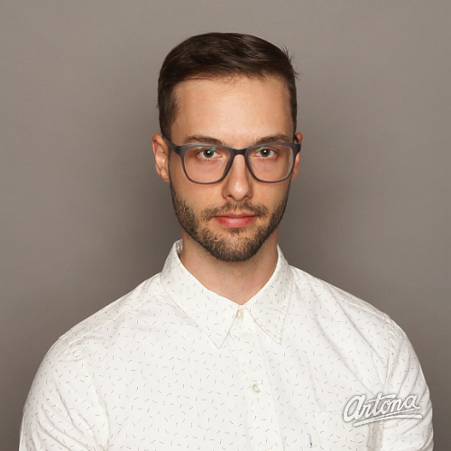

<div class="container__col-sm-10 container__col-md-offset-2">
  <div class="container__row">
      <div class="container__col-md-3 container__col-sm-12">
          
        </div>
    <div class="container__col-md-5 container__col-sm-12">
      <div class="container__row">
        <div class="container__col-md-12 container__col-sm-12">
            <h2>Clayton Hebenik</h2>
            <p class="lead">I’m a designer and front-end developer with a passion for crafting user-centered experiences that are memorable and exciting.</p>
            <p><a href="Clayton_Hebenik_resume.pdf" target="_blank" class="button"><i class="fa fa-file-pdf-o"></i>  Resume</a></p>
          <p>I began working as a web designer and front-end developer in Calgary, AB in 2011, where I worked in collaborative teams in an small web design firm, as well as independently as a freelancer.</p>
          <p>I focus on user centred design and usability and actively seek out learning opportunities to stay up to date with the latest trends and web standards. I enjoy tackling new challenges whether it's learning something new or skateboarding and hiking.</p>
        </div>
      </div>
    </div>
    
  </div>
</div>
